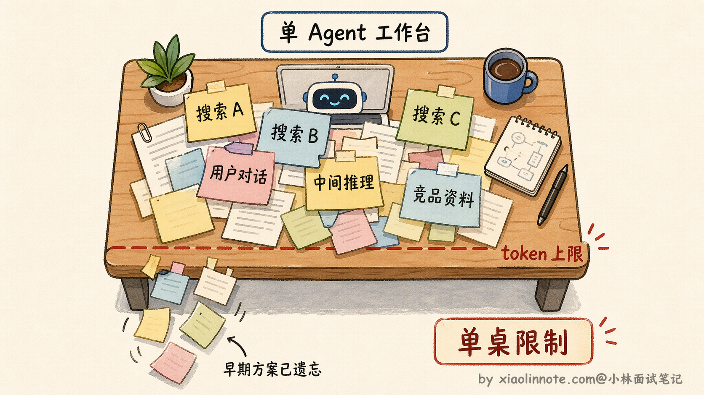
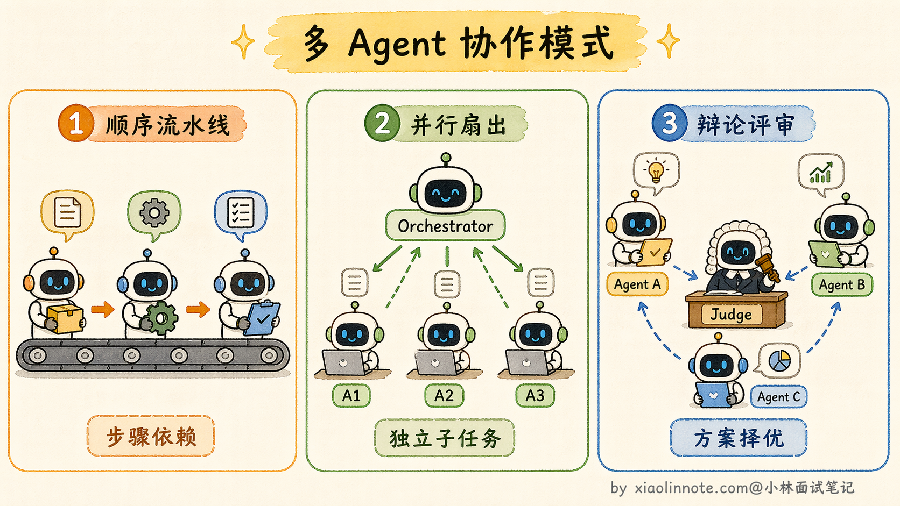
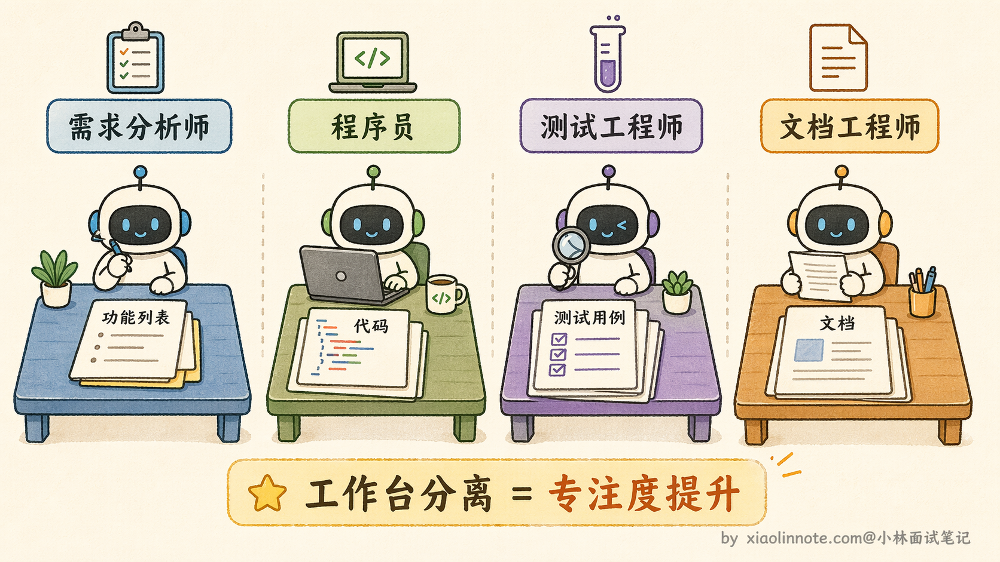
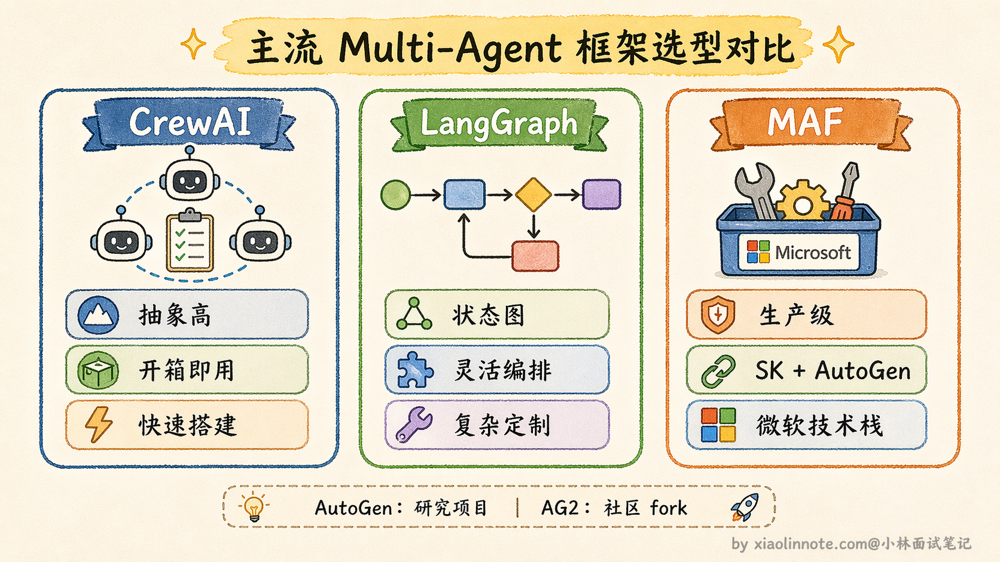
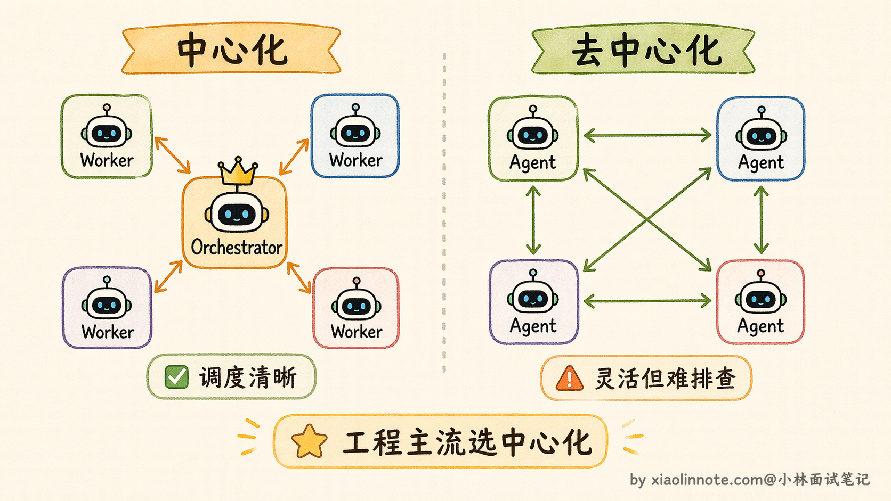

10. 什么是 Multi-Agent？
👔面试官：你了解 Multi-Agent 吗，说说它是什么，为什么要用？
🙋♂️我：Multi-Agent 就是多个 AI 一起工作，可以提高效率，一个人搞不定的事情多个人一起做。
👔面试官：你说「一个人搞不定」，具体是哪方面搞不定？技术上的根本限制是什么？
🙋♂️我：就是……任务太复杂，一个 Agent 处理不过来，容易出错。
👔面试官：「处理不过来」太模糊了。单个 Agent 有一个非常具体的硬限制，你知道是什么吗？不是「容易出错」，是结构性的上限。
🙋♂️我：哦，是 context window 的大小限制，装不下太多内容。
👔面试官：对，这是第一个。那除了 context 限制，还有一个更深层的问题，跟专业能力有关，你能说出来吗？
被追问到根因了，其实 Multi-Agent 的价值不只是「多几个 AI」，背后有两个很具体的工程问题驱动着它。
💡 简要回答
多智能体系统（Multi-Agent）就是多个 Agent 协作完成任务，每个 Agent 各有分工，有的负责搜索、有的负责写代码、有的负责做评审。
我理解单个 Agent 主要受两个限制：一是 context 窗口大小，复杂任务信息量一多就撑爆了；二是单点能力，什么都让一个 Agent 做，每件事都是泛才。
Multi-Agent 通过专业分工和并行执行，能处理更复杂、更长流程的任务，这是我在实际项目里选择多智能体方案的核心原因。
📝 详细解析
想象这样一个场景：你让 Agent 帮你完成「写一份完整的 AI 行业竞品分析报告」。它需要搜索十几家竞品、读懂每家的产品功能、梳理核心差异、整理对比数据、最后写结论。
光是搜索下来，每家竞品几百字，十家就是几千字的搜索结果，再加上来回确认的对话历史和中间推理，还没开始写结论，整个工作台就已经快撑满了。
这里说的「工作台」，就是 LLM 的 context window。LLM 处理任务的方式，是把它当前能看到的所有内容，包括你的指令、它自己的推理过程、工具返回的搜索结果、历史对话记录，全部摆在这张工作台上，一起处理。
这个工作台是有大小上限的，常见的模型限制从 12.8 万到 100 万个 token 不等，塞满了之后，早期的内容就会开始「掉落」，就像一张桌子放满了东西，新的东西要放进来，旧的就得推到地上。

于是，你三十分钟前确认的方案、搜集的第一批资料，就这么悄悄消失了，Agent 开始「遗忘」。
context 有上限，这是第一个硬限制。但更深的问题其实是「专业度」的问题。
让一个 Agent 既搜信息、又写代码、又做测试、又写文档，它在每一件事上都得兼顾，精力是分散的，就像一个人同时担任产品经理、程序员、测试工程师和文档工程师，每个角色都做得不够专注，互相干扰。
而且一旦某个环节出问题，整条链路就卡住了，没有隔离性，排查起来也很痛苦。
Multi-Agent 核心思路
Multi-Agent 的核心思路，就是「团队作战代替单打独斗」。
与其让一个 Agent 包揽所有事，不如把任务按职能拆开，每个 Agent 只负责一件事，专心做好自己那块，做完把结果传给下一个。
Multi-Agent 之间的协作方式主要有三种模式。第一种是顺序流水线（Sequential Pipeline），Agent A 做完把结果交给 Agent B，B 做完交给 Agent C，就像工厂流水线一样，每个环节依次处理。第二种是并行扇出（Fan-out），一个调度者把多个独立子任务同时分发给不同的 Worker Agent，它们各自并行执行，最后由调度者收集汇总。第三种是辩论/评审模式（Debate/Review），多个 Agent 对同一个问题各自给出方案，然后由一个裁判 Agent 或者它们互相评审来筛选最优解，这种模式在需要高质量决策的场景特别有用，比如代码评审、方案选型。

就像公司里的部门协作：产品经理负责需求梳理、开发负责写代码、测试负责验收，每个人专注自己的职责，信息传递清晰，哪个环节出了问题也好定位责任。Multi-Agent 系统就是把这套分工思想搬到 AI 里。
还是以「开发一个爬虫工具」为例，来感受一下两种做法的差距。
不用 Multi-Agent 的情况：一个 Agent 接到任务，同时在想需求文档、代码结构、测试策略，context 里塞满了各种信息，思路乱成一锅粥，写出来的东西哪块都不够好，而且任何一步失误都得从头来。
用了 Multi-Agent 的情况：
- 第一个 Agent 是「需求分析师」，它只做一件事，把用户需求转化成清晰的功能列表，输出之后就完成使命，退出了，它的工作台是干净的；
- 第二个 Agent 是「程序员」，拿到功能列表，专注写代码，不需要知道需求是怎么来的，context 里只有代码相关的信息；
- 第三个 Agent 是「测试工程师」，拿到代码，专注写测试用例……每个 Agent 的工作台都很干净，只有自己这块任务相关的内容，专业度也更高。

更关键的是，需求分析这步结束之后，程序员 Agent 和测试 Agent 其实可以并行工作，测试框架的搭建不需要等代码写完，两件事同时进行，整体速度也快了。这就是前面说的「并行扇出」模式在实际场景中的应用，Orchestrator 识别出哪些子任务之间没有依赖关系，就把它们同时派出去，等所有结果回来再统一整合。
并行执行带来的不只是速度提升，还有一个隐藏的好处：每个 Worker 的 context 是完全隔离的，程序员 Agent 不会被测试用例的信息干扰，测试 Agent 也不会被代码实现的细节淹没，各自在干净的环境里专注工作，输出质量也更高。
目前业界已经有不少成熟的 Multi-Agent 框架可以直接用，比如 CrewAI、LangGraph 等，它们把 Agent 之间的通信协议、任务调度、结果汇总这些基础设施都封装好了，开发者只需要定义每个 Agent 的角色和工具，不用从零搭建调度逻辑。值得注意的是，微软在 2025 年推出了 Microsoft Agent Framework（MAF），它把微软原来两条并行的产品线——Semantic Kernel（企业级）和 AutoGen（多 Agent 编排）——合并到了一起，作为面向生产的统一 SDK；原 AutoGen 仓库继续以研究/原型项目的身份迭代，社区也 fork 出了 AG2 保持向后兼容。选框架时要留意这个变化，如果是微软技术栈的生产场景建议优先考虑 MAF，其他场景 CrewAI（上层更易用）或 LangGraph（底层更灵活）都是持续维护的主流选择。

Multi-Agent 系统的组织方式主要有两种：一种是中心化，由一个统一的调度者来分配任务、收集结果；另一种是去中心化，Agent 之间自行协商、直接通信。两种方案各有取舍，工程上用得更多的是中心化方案，因为调度逻辑清晰、责任归属明确、排查问题也容易。

🎯 面试总结
这道题的核心在于能不能说清楚「为什么需要 Multi-Agent」，而不是泛泛地说「多个 AI 一起工作效率更高」。
面试官最想听到的是两个具体的技术驱动因素：第一是 context window 的硬上限，单个 Agent 处理复杂任务时信息量一旦超出窗口，就开始「遗忘」，这是结构性的限制，不是努力优化能绕过去的；第二是专业度问题，让一个 Agent 身兼数职，每件事都做得不够专注，分工之后每个 Agent 的 context 是干净的，只装自己那块的信息，专业能力也更强。
回答时还要提到并行执行这个好处，多个 Worker 同时跑，整体效率有实质提升。把这三个点说清楚，这道题就答到位了。
对了，AI Agent的面试题会在「公众号@小林面试笔记题」持续更新，林友们赶紧关注起来，别错过最新干货哦！